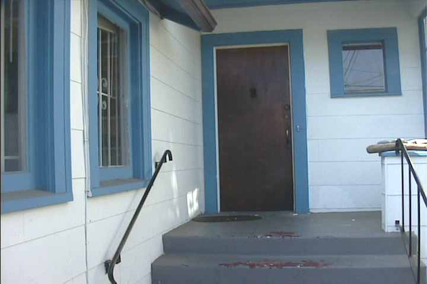
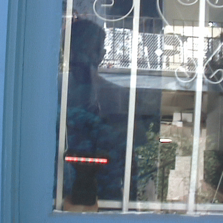
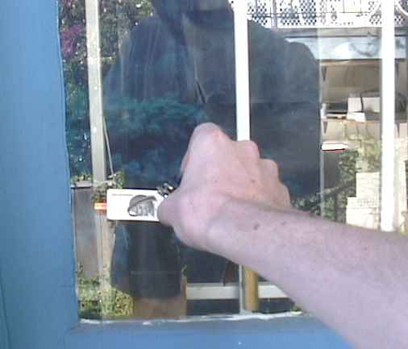
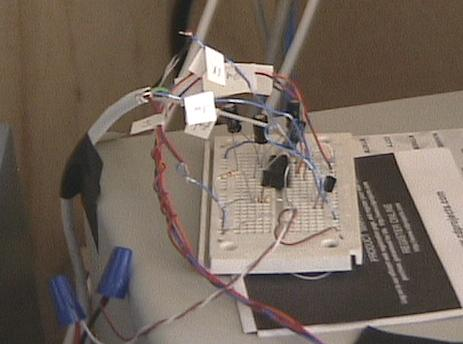
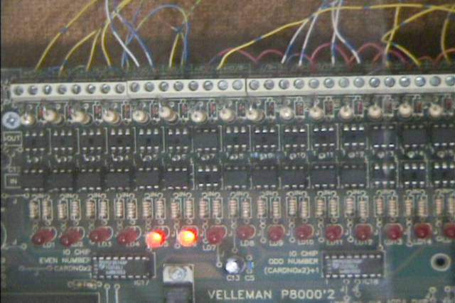
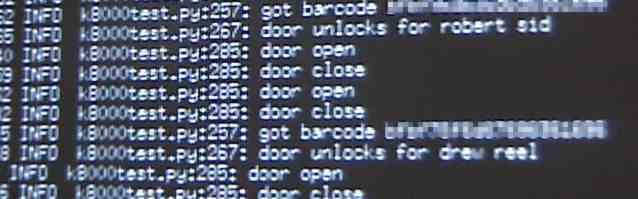
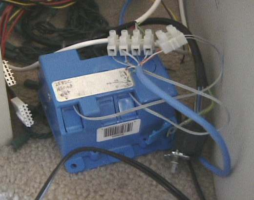
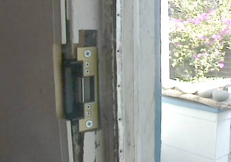
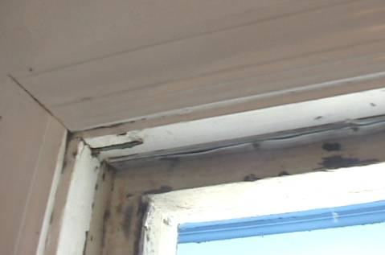
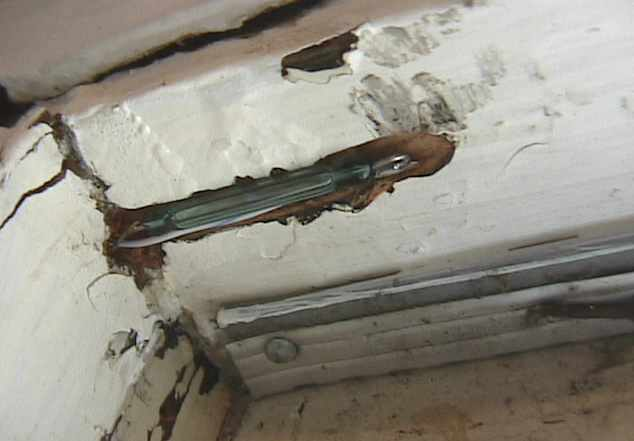

The front of the house. The windows on the left are to my room.

In my window sits a cheap barcode
reader. It's powered by a computer power supply I ripped from an
old computer.

Anyone who wants to get into the house can scan a barcode that they
carry. A video store gave me a little keychain barcode which I'm using
here. The scanner has a CCD; I don't have to slide the barcode. The
scanner actually has a beeper that I can control from the
computer. You can hear it beep from outside the window.

Here's the driver circuit I slapped together for the barcode
reader. It's just a MAX232 chip that converts CMOS/TTL levels to the
RS232 spec. The output connects to the serial port of one of my Linux
boxes. That box runs a trivial python program to read a packet from
the serial port and send it via TCP/IP to another computer in the
house. The scanner interface program is now available here, and it
now uses the pyserial module so it might run on
mswindows too.

The receiving computer is connected to this K8000 experimenter
board. I2C chips on this board . If your barcode was on the list
of allowed keys, I raise output 7 on this board for 6 seconds. Input 6
(the right-hand illuminated LED) shows that the door was closed when I
took this picture. See below for how I sense if the door is opened or
not.

Some successful reads.

When the K8000 board raises the right output signal, this driver
circuit sends 24VDC to the door strike,
shown below.

In this electric strike is a solenoid that relaxes the part of the
strike that was holding the door closed. The door still functions as
it did before, but now I have an additional way to allow the door to
open.

This is the top of the door frame, where I have wedged a reed
switch into the wood. There's a magnet on top of the door that
closes the switch when the door is closed (hence the turned-on LED in
the picture above).

Closeup of the reed switch in the wood.